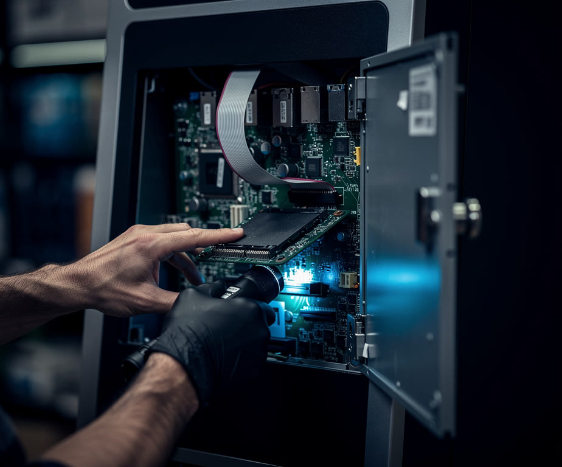

O caixa eletrônico parou.
A agência está vazia e o cliente só vai descobrir quando chegar. Alguém precisa estar lá.
Field service de TI · Cobertura nacional
Técnicos de TI em todo o Brasil. Você acompanha cada visita, do agendamento ao relatório.
A agência está vazia e o cliente só vai descobrir quando chegar. Alguém precisa estar lá.
Sem rede, o posto de enfermagem volta ao papel. Cada minuto pesa.
Cada minuto sem o terminal é venda que vai embora.
350 técnicos de referência nas 27 unidades da federação. E você acompanha cada passo, do chamado ao relatório.
Ver onde estamosUm equipamento parado não custa só o conserto. Custa a venda que não acontece, a equipe esperando e o cliente que desiste. Coloque os números da sua operação e veja o tamanho disso por mês.
Cálculo feito no seu navegador, só com os números que você digita. Os valores iniciais são um exemplo. Não é uma proposta comercial nem uma promessa de economia.Alinhamos o escopo, o local, o prazo e os critérios que vão orientar o atendimento.
A designação considera a região, a disponibilidade e a necessidade técnica da visita.
O atendimento avança com registro de status, evidências e eventual necessidade de retorno.
O relatório do atendimento reúne o que foi feito, o resultado da visita e os próximos encaminhamentos.
Organizamos pessoas, escopo e acompanhamento para que você saiba o que acontece em cada local de atendimento.
Instalação e ativação de ambientes de tecnologia, dentro da sua janela operacional.

Suporte presencial para diagnosticar, corrigir e registrar o resultado de cada visita.
Mudanças, operações temporárias e desmobilização, com escopo e destino definidos.
Rede de referência nas 27 unidades da federação. Selecione um estado para ver a sua região.
Quantidades de referência, sem atualização em tempo real. A disponibilidade atual é confirmada pela equipe.
A operação em números
Rede de referência, com a disponibilidade confirmada pela equipe.
Do Acre ao Rio Grande do Sul, sem deixar estado de fora.
A partir da abertura, pulando fim de semana e feriado nacional.
Varejo, bancos, saúde, indústria, telecom, transporte e eventos.
Plataforma própria · Gestão de chamados
A plataforma de chamados da NovaSync. Sua empresa abre e acompanha cada atendimento, e o técnico registra a visita e o relatório pelo celular.
Da loja ao centro de distribuição, o atendimento precisa respeitar a rotina de cada operação.
Empresas atendidas pela NovaSync em operações de Field Service de TI.
Gostaria de destacar a excelência da Novasync no atendimento aos chamados da Melhoretec. Temos tido uma experiência muito positiva, principalmente pelo ótimo tempo de agendamento e pela agilidade no atendimento.Gustavo Agostini — Suporte Melhoretec
Os técnicos demonstram conhecimento, são capacitados e, além de resolverem as demandas com eficiência, conduzem o atendimento de forma muito humana e atenciosa.
A parceria tem sido muito importante para nós, e deixamos aqui nosso reconhecimento pelo excelente trabalho e pela qualidade do suporte prestado.
A Novasync nos ajudou muito a otimizar o tempo de suporte aos nossos clientes. A equipe conta com excelentes profissionais, altamente capacitados e preparados para atender às mais diversas demandas, tanto de hardware quanto de software. Estamos muito satisfeitos com a parceria e com a qualidade do atendimento prestado.Novalogi
Local, prazo desejado, equipamentos envolvidos e o que precisa ser feito. Com essas informações, a equipe avalia a disponibilidade e alinha o atendimento.
O prazo é combinado conforme o escopo, a região e a disponibilidade técnica. Informe sua necessidade para que a equipe confirme a janela de atendimento.
O acompanhamento reúne o status da demanda. No fechamento, o Relatório do atendimento consolida os registros da visita, as evidências e os próximos encaminhamentos.
Sim. A operação pode atender demandas pontuais, contratos recorrentes e projetos temporários, incluindo ativações, eventos e desmobilizações.
A necessidade de retorno é registrada junto ao motivo e às pendências, como o recebimento de uma peça. A próxima visita é alinhada com os responsáveis.
É técnico de TI? Apresente sua experiência e região de atendimento para fazer parte da nossa rede.
A NovaSync é uma empresa brasileira de field service de TI. Coordena 350 técnicos parceiros nas 27 unidades da federação para instalar, manter e trocar equipamentos de TI em campo, com atendimento em até 2 dias úteis e relatório do atendimento em PDF. Desenvolve o Horus, plataforma própria de gestão de chamados.
Conte onde sua operação precisa de apoio. Vamos alinhar o escopo e o caminho para colocar tudo em campo.
Fazer o diagnóstico